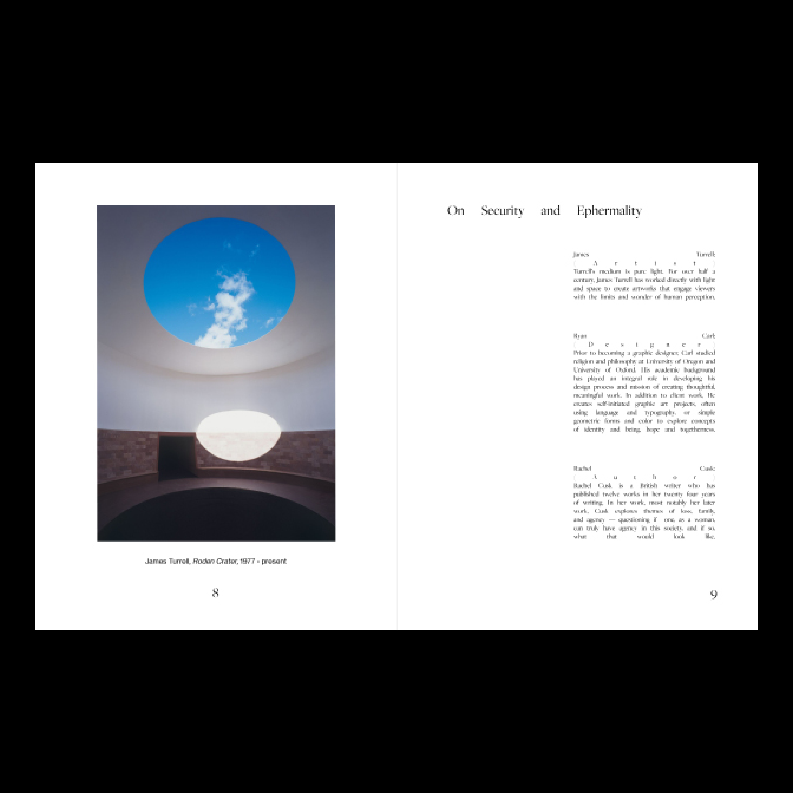
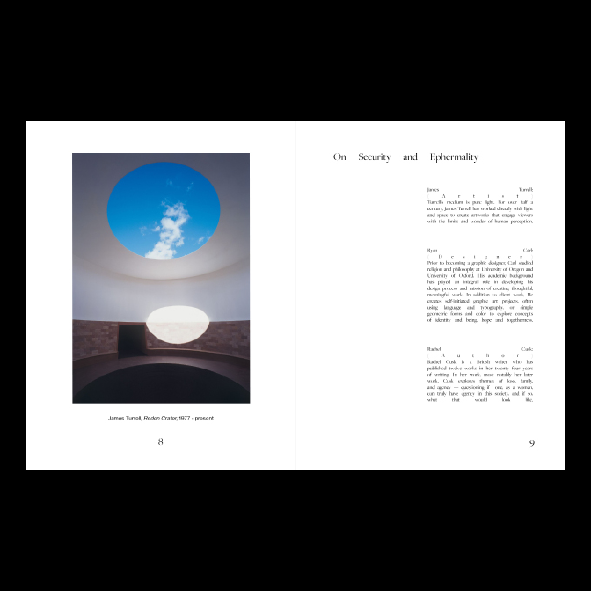
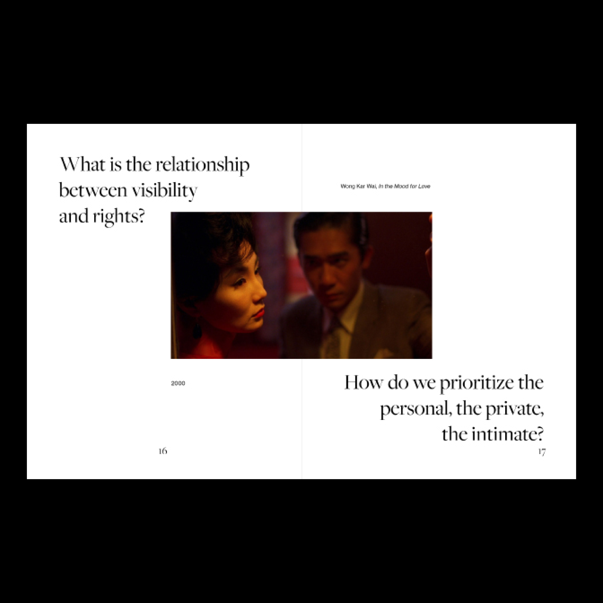
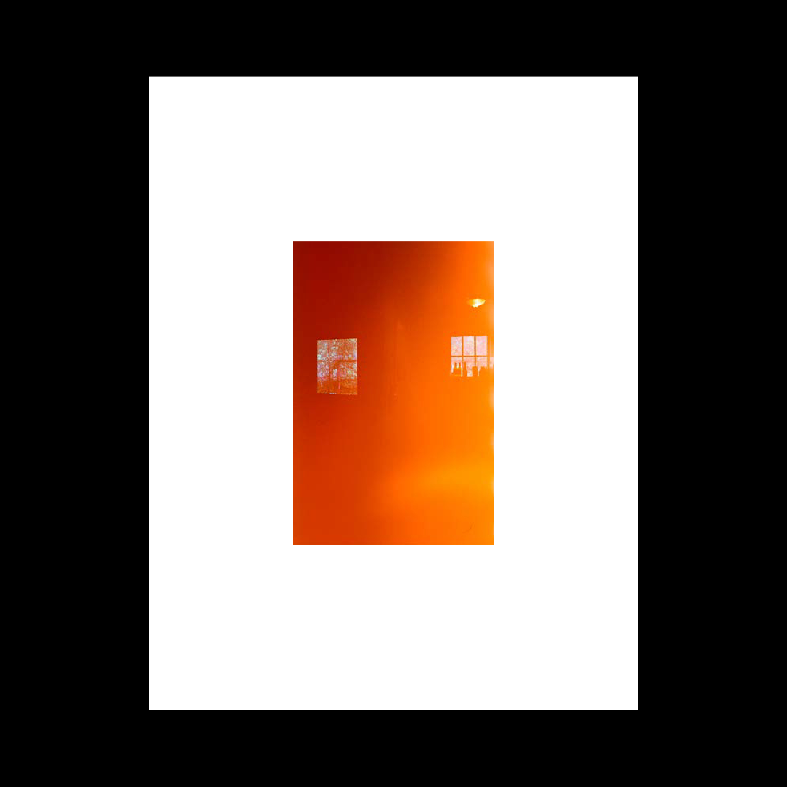
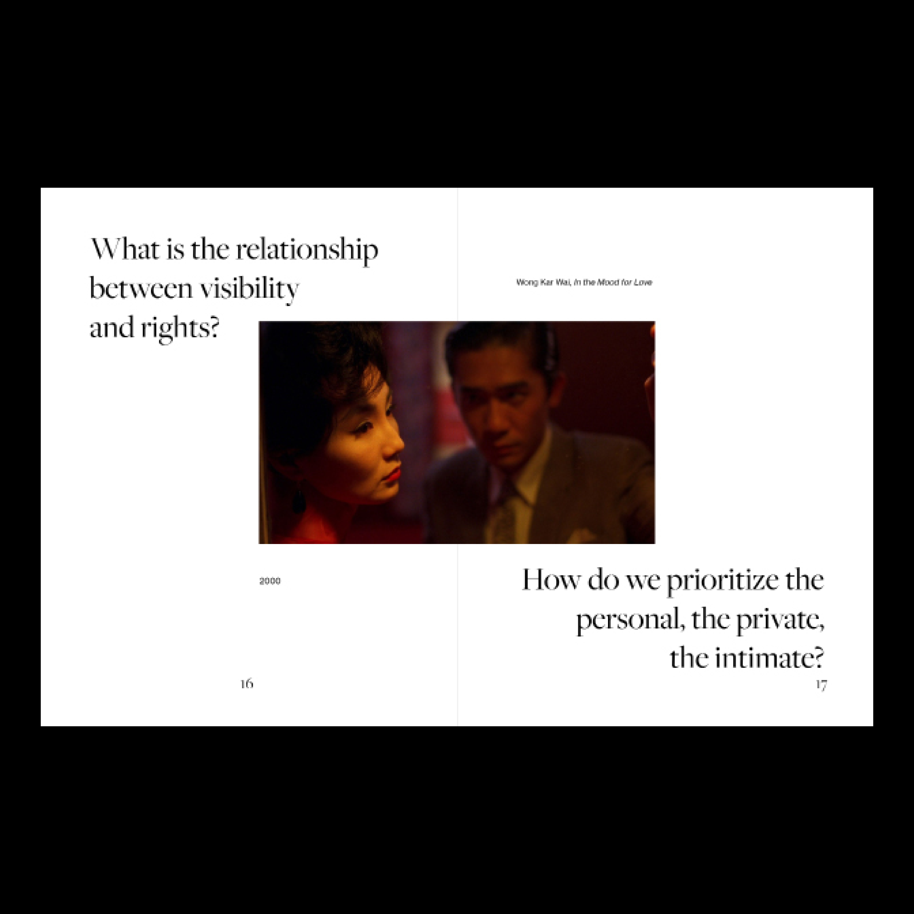
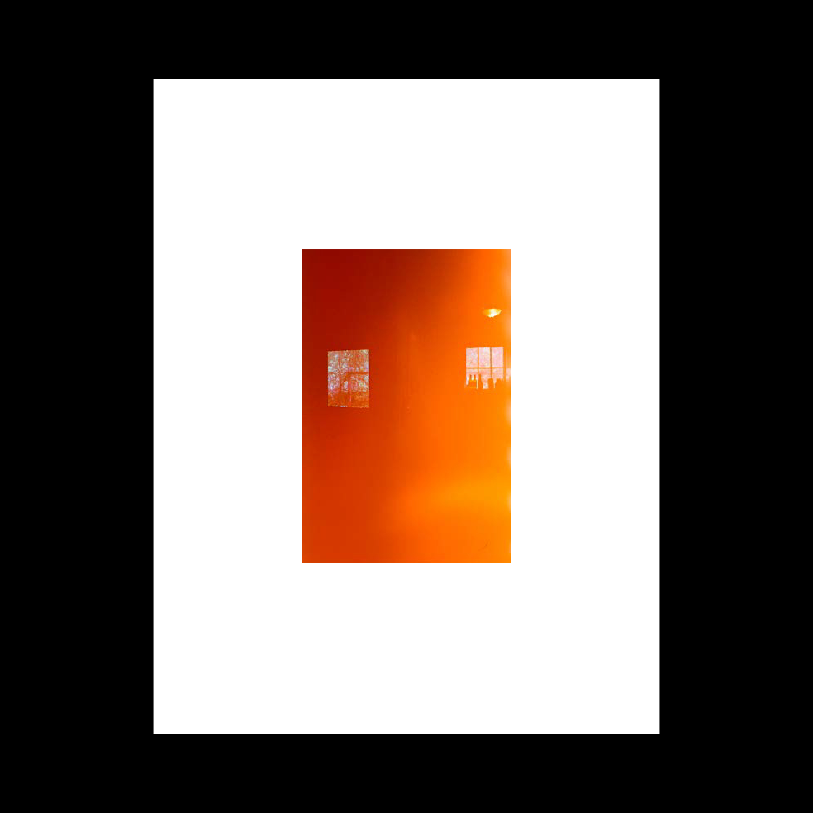

Recipes for Community is a project sown from a simple concept: sharing recipes to bridge distance.
The book documents an email chain I started in March 2021, connecting 6 people of Asian diaspora living in America, some of whom had met individually but have never come together as a whole. Through the cultural medium of cooking, Recipes for Community seeks to apply the essence of "cooking for one another" as a concept beyond cooking, one that can be applied to any form of connectivity and community. By having the participants share recipes, stories, pictures from their childhoods, and more, Recipes for Community unfolds beyond a "cookbook," transforming into an exploration of space, memory, community, and family, while building exactly that — a family.
Ostensibly, this book documents a community started as a space to provide healing for Asian Americans and Pacific Islanders during a year when the veil of model minority was pulled back to reveal how truly vulnerable we are and have always been to the violence of a perpetually foreign existence. However, I want this project to be a seed to grow more intimate, healing communities across digital and physical boundaries, not only for AAPI, but other marginalized communities as well.
Recipes for Community is both an object and an invitation — a way of reminding others the solidity of the communities we create, and an open invitation to join our table.


 

 


